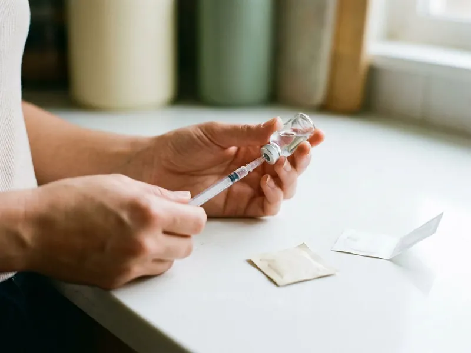

BPC-157 + TB-500 Blend in St. Cloud, FL
Winter Haven Weight Loss offers the BPC-157 + TB-500 blend online in St. Cloud, FL, with a frank talk about what combining does and does not add.
- Licensed provider review
- One premixed daily injection
- Shipped from a US pharmacy
- Mid-course progress check

- Licensed Florida Medical Providers
- Personalized Treatment Plans
- Discreet Home Delivery
- Ongoing Medical Support
Online BPC-157 + TB-500 Blend for Patients in St. Cloud, FL
Winter Haven Weight Loss prescribes the blend for patients who want both peptides without managing two vials and two schedules. Before prescribing, your provider looks at the injury timeline and current physical therapy.
What the program includes:
- Provider review of injury history and rehab so far
- Single premixed vial with a written dosing schedule
- Mid-course check-in to judge progress

Start your blend questionnaire online in St. Cloud, FL.
Answer a few questions online about your injury and recovery so far, and a licensed provider will review them.
Related Peptide Therapy Options in St. Cloud, FL
Peptide protocols for recovery, longevity, sleep and focus, prescribed when appropriate and compounded by licensed US pharmacies.


helped
Why patients choose us for BPC-157 + TB-500 Blend in St. Cloud, FL
The idea behind the blend is coverage. One peptide is studied for local tendon repair and the other for wider soft tissue recovery, so the blend tries to cover both at once.
- One Injection, Both peptides come premixed in one vial, so there is one schedule to follow.
- Set Course Length, Courses run four to eight weeks, then pause.
- Honest Trade-Off, Your provider explains that combining makes side effects harder to trace.
Anywhere in St. Cloud
Reviews are done online, so patients anywhere in St. Cloud or nearby can start without a clinic visit. Prescribed vials ship from a licensed US pharmacy to your door.
Licensed care team
Every case goes to a Oakwell MD provider who decides whether two peptides make sense for your goal. A cancer history usually ends the conversation.
Safety first
Two peptides mean two possible sources of a side effect. Your provider may pause the blend and restart one peptide to sort it out, usually around week three or four.
The care standards behind every St. Cloud plan
Winter Haven Weight Loss runs on the Oakwell MD clinical model: licensed providers, US pharmacies that meet state and federal compounding rules, and follow-up that does not stop when the package arrives. Every treatment on this site goes through the same screening throughout St. Cloud, FL.
How the BPC-157 + TB-500 Blend Works in St. Cloud, FL
How the Blend Works in St. Cloud
Each peptide has its own proposed job. BPC-157 is a 15 amino acid peptide based on a stomach protein and studied in animals for tendon and gut repair, while TB-500 is a thymosin beta-4 fragment that helps cells move toward injured tissue. In animal studies, both appear to support new blood vessel growth. Neither is FDA-approved, and the blend itself has not been studied in people.

Who the Blend Is For
Mixed injuries are the usual reason. Patients asking about the blend are typically active adults with a strain that involves muscle and tendon together, such as a calf or rotator cuff injury, and who are already doing rehab. Some simply prefer one injection over two. Tested athletes should know WADA bans both.
Dosing and Schedule in St. Cloud
Daily injections are typical. Most formulas are given as one small subcutaneous injection daily, or five days a week, for four to eight weeks, and the exact amount depends on the ratio of BPC-157 to TB-500 your pharmacy uses. A break of several weeks follows each course. Once mixed, the vial needs to stay in the fridge.
What to Expect Week by Week
The first two weeks are quiet. Most patients are learning the routine early on, and any reduction in soreness or improvement in range of motion, if it happens, tends to show up between weeks two and five of the course. Rehab and sleep still drive most of the result. A check-in near the midpoint decides whether you finish the course.
Side Effects and Risks in St. Cloud
Reported side effects are mostly mild. Patients mention injection-site redness or itching and some nausea, and a smaller number report headaches or tiredness during the first week or two of daily injections. Both peptides may promote blood vessel growth, which raises a theoretical tumor concern. With two peptides in one vial, pinning down the cause of a reaction is harder.
Eligibility and Screening
Cancer comes up first. The blend is not prescribed for active cancer or a recent cancer history, during pregnancy or breastfeeding, or for a new and severe injury that needs an in-person exam and possibly imaging. Significant heart or liver disease gets a closer review. Blood thinner use is also asked about.
How the Blend Compares to Single Peptides in St. Cloud
Simpler is easier to judge. Using BPC-157 or TB-500 alone makes it clear what helped and what caused a side effect, while the blend trades that clarity for convenience and broader theoretical coverage. KLOW adds two more peptides, GHK-Cu and KPV, for skin and inflammation. Many providers start with one peptide and move to the blend only if needed.
How the Online Process Works
Start with the injury story. The questionnaire asks where the injury is, when it happened, what treatment you have had so far, and whether you can upload an MRI report or physical therapy notes. Your answers go to a licensed provider, who may ask a question or two. Any prescription is filled by a licensed US pharmacy and mailed to you.
BPC-157 + TB-500 Blend Near Me in St. Cloud, FL
Getting a recovery peptide blend reviewed in St. Cloud often means a cash-only wellness office and a long wait for the first appointment. Online review takes about ten minutes. You never leave home.
Your provider needs the injury history first. Upload any MRI or ultrasound report you have, and list every medication you take, including blood thinners and any supplements you use daily. Mention your physical therapist.
The blend ships from a licensed US pharmacy to homes across St. Cloud and nearby towns, in insulated packaging with mixing water and syringes included. A whole course usually fits in one box. Boxes are unmarked.
Is BPC-157 + TB-500 Blend right for you?
Five quick questions, then a licensed provider reviews your answers. No commitment.
Winter Haven Weight Loss at a glance
- Online care for St. Cloud, FL and nearby
- Everything handled online
- Medication shipped from licensed US pharmacies
- 4.8-star rated by 488+ Winter Haven-area patients
St. Cloud patients
- Population
- 66,448
- Visits
- Online, from anywhere in St. Cloud
- Delivery
- St. Cloud and communities nearby
- Nearby
- Buenaventura Lakes, Kissimmee, Meadow Woods, Poinciana
Patients in St. Cloud, FL choose an online clinic for the BPC-157 + TB-500 blend because one shipped vial and online check-ins fit around rehab.
St. Cloud map
Everything we treat in St. Cloud, FL
Weight loss is where most patients start. The same provider-reviewed, shipped-to-you model covers peptides, sexual health, hair, sleep and longevity.


How to Get Started With the BPC-157 + TB-500 Blend in St. Cloud, FL
Have your injury timeline and imaging reports ready, then begin.
Answer a Few Questions
The short online questionnaire asks about your injury and your health history. You can attach imaging or rehab notes.
Provider Reviews the Fit
A licensed provider decides whether the blend fits or a single peptide makes more sense. They may ask follow-up questions first.
Course and Check-In
If prescribed, the blend ships from a licensed US pharmacy with supplies. A mid-course check-in decides whether you finish.
Frequently Asked Questions About BPC-157 + TB-500 Blend in St. Cloud
It may suit active adults with a strain involving both muscle and tendon. Active cancer or pregnancy rules it out.
Insurance coverage for compounded peptide blends is rare, because they are not on drug formularies. Some patients use HSA or FSA funds where allowed.
A provider explains why, often citing a cancer history or an injury that needs imaging. A single peptide or in-person care may be suggested instead.
Pricing is shown after your provider review because it depends on your treatment plan. Single peptides and the blend carry different pricing.
Neither BPC-157 nor TB-500 is FDA-approved, and the blend is made by a compounding pharmacy. In 2023 the FDA listed BPC-157 among compounding substances with possible safety risks.
The thinking is that BPC-157 handles local repair and TB-500 covers wider soft tissue repair. No human study has confirmed that the pair works better together.
No taper is needed, since neither peptide is habit-forming. A pause follows each course before any new review.
Injection-site redness and mild nausea are most common, with occasional headache or fatigue. There is also a theoretical tumor concern, which is why cancer history is screened.
What patients say about Winter Haven Weight Loss
Chris B.
After losing the weight I was terrified of gaining it back. The maintenance plan tapered me down with guidance and I have held steady for a year.
Weight Loss Maintenance · Kissimmee, FLPriya S.
I will never do needles, so the dissolving tablet was the only reason I tried this. Easy morning routine, discreet packaging, and the care team explained every step before I paid anything.
Semaglutide Pills · Poinciana, FLJordan M.
No awkward waiting room, no pharmacy counter. The chewable they recommended works and the package looked like anything else on the porch.
ED Treatment · St. Cloud, FLAngela W.
One tablet a day instead of three products. Six months in the thinning at my part has filled in noticeably and the check-ins kept me consistent.
Hair Growth · Buenaventura Lakes, FLMarcus T.
What sold me was that they did not just mail a kit. My provider adjusted my dose twice based on how I was feeling and actually answered my messages. Down more than I expected and my blood pressure is finally normal.
Tirzepatide Injections · Four Corners, FLLaura S.
Honest from the start. The provider told me which option fit my history and why, and when I hit a plateau they changed the plan instead of just raising the dose. Felt like real medicine, not a subscription.
GLP-1 Weight Loss · Meadow Woods, FLReviews reflect individual experiences. Results vary and treatment is prescribed only when clinically appropriate.
Areas We Serve Near St. Cloud, FL
Important safety information. GLP-1 medications (semaglutide, tirzepatide) are not for everyone. Do not use them if you or a family member have had medullary thyroid carcinoma or Multiple Endocrine Neoplasia syndrome type 2, if you are pregnant or breastfeeding, or if you have a history of pancreatitis without discussing it with your provider. Common side effects include nausea, constipation, diarrhea and reduced appetite. Compounded medications are prepared by licensed pharmacies and are not FDA-approved. A licensed provider decides whether any treatment is appropriate for you.